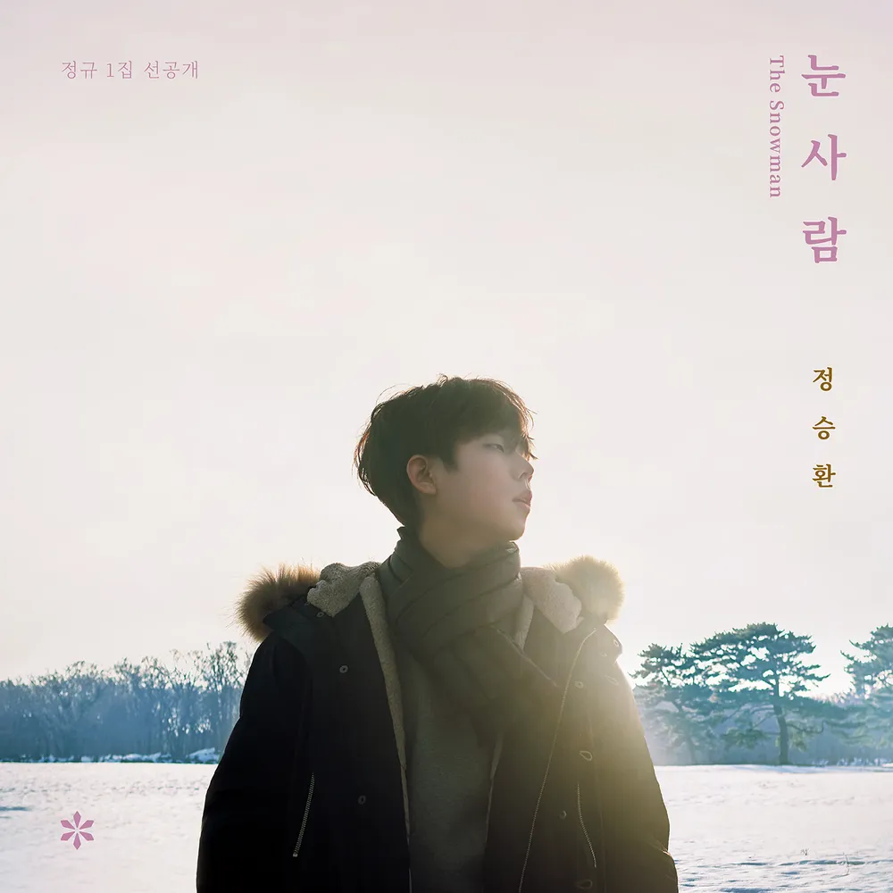

안녕하세요 라보엠입니다.
겨울은 좋은 노래들이 참 많죠. 겨울 노래를 많이 부른 가수가 있습니다. 목소리도 잘 어울리구요. 오늘은 정승환의 겨울 노래 눈사람을 소개해드리겠습니다.
☃️ 정승환 눈사람
정승환의 눈사람은 아이유의 작사로 이슈가 되었으며, 유희열의 스케치북에 아이유가 나와서 직접 부르기도 했었습니다. 또한, 아이유의 노래 밤편지를 작곡했던 김제휘가 작곡하여 좋은 가사와 함께 서정적이고 아름다운 노래를 완성했습니다. 뮤비는 일본 훗카이도 로케이션으로 설국이라는 말이 어울리는 아름다운 배경에서 촬영했습니다. 가사가 너무 슬픕니다. 사랑했던 연인이 떠나는 것을 우리가 좋아했던 계절 겨울이 가는 것에 비유하면서 나를 떠나는 당신이지만 또 오는 봄과 함께 행복해지기를 바라는 내용입니다.
정승환 눈사람 가사 - 아이유 작사
멀리 배웅하던 길
여전히 나는 그곳에 서서
그대가 사랑한
이 계절의 오고 감을 봅니다
아무 노력 말아요
버거울 땐 언제든
나의 이름을 잊어요
꽃잎이 번지면
당신께도 새로운 봄이 오겠죠
시간이 걸려도
그대 반드시 행복해지세요
그다음 말은 이젠
내가 해줄 수 없어서
마음속에만 둘게요
꽃잎이 번지면
그럼에도 새로운 봄이 오겠죠
한참이 걸려도
그대 반드시 행복해지세요
끝눈이 와요
혹시 그대 보고 있나요
슬퍼지도록 시리던
우리의 그 계절이 가요
마지막으로 날
떠올려 준다면 안 되나요
다시 한 번 더 같은 마음이고 싶어
우릴 보내기 전에
몹시 사랑한 날들
영원히 나는 이 자리에서

아직 겨울은 남아있지만, 노래를 듣고 있자니 곧 봄이 올 것 같은 기분입니다. 곧 다시 돌아올 계절에 여러분들 모두 행복하세요.